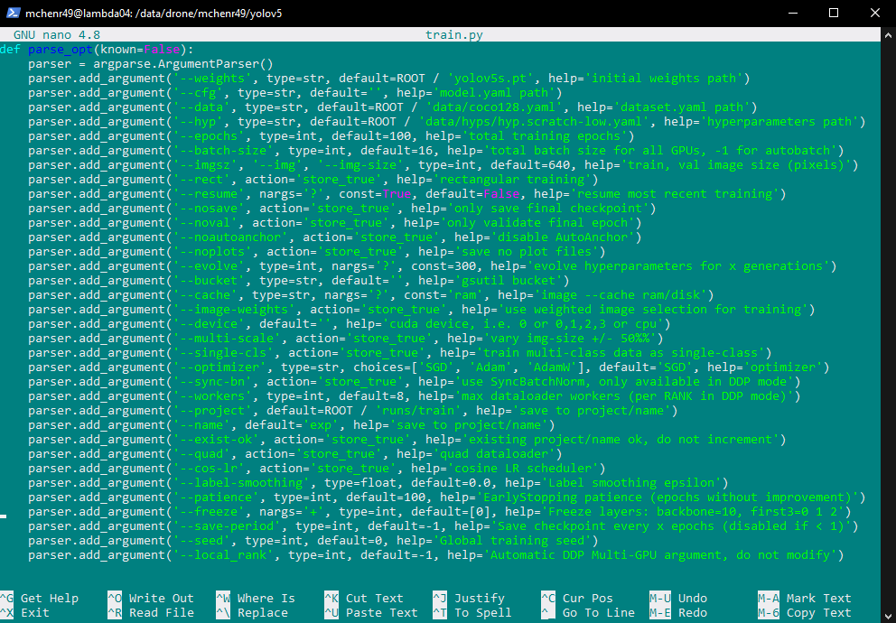
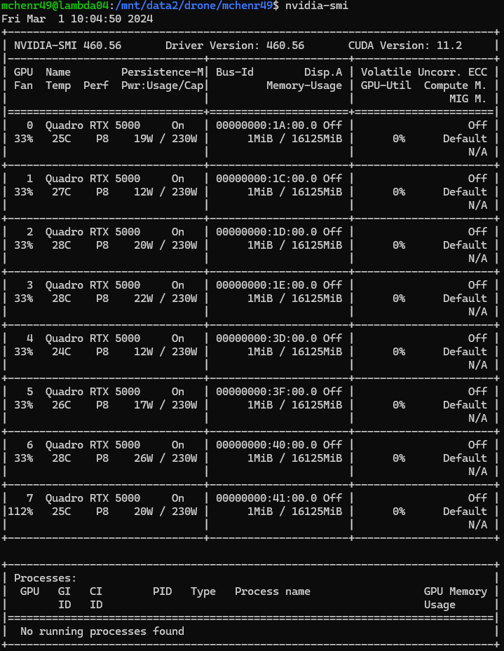
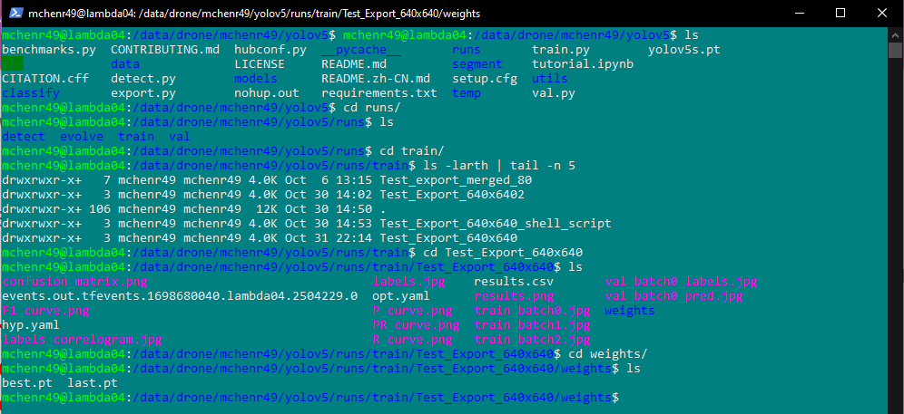

Training a YOLOv5 Model#
After you successfully export some dataset to Lambda (see Exporting Data on CVAT), you will want to train with that dataset. In order to train, we will have to ensure our data is ready for training.
Preparing Dataset#
Every training session needs training data (obviously), but it also needs validation data to generate metrics during training. You CANNOT train without validation data.
We will also want to make sure we perform any augmentations to our dataset before using it to train.
Assigning Images to Validation Dataset#
You may use a platform to export your data split up into train/valid/test folders. If you are using CVAT, you will have to do this yourself. Fortunately, we have a script for it.
Using the dataset_assigner.py script, you can assign a certain percentage of your data in train/valid/test (for more details, see Our Scripts)
NOTE: If you intend to split this data into tiles, or any other kind of augmentation that will increase the number of images/labels in your dataset, you will want to perform this step LAST. Imagine: You have 10 full-sized images, assign 2 to valid, and then split all of the data into tiles, generating 25 tiles each image. Your dataset is much larger now, but the validation dataset is limited to data from those 2 photos you originally assigned, rather than assigning 50 tiles from a tiled dataset of 250 images.
Augmentations#
YOLOv5 performs various augmentations, which you can read about here: Forum Post about YOLOv5 Augmentation Pipeline.
We may perform augmentations of our own from time to time. One such augmentation may be to simply cut our images up into square tiles of 640x640 or some other dimension. We have a script for this, called the FullBushDivider.py (for more details, see Our Scripts).
Understanding the train.py script#
The YOLOv5 repo comes equipped with scripts that we can use to train, validate, or test our models.
For now, we’ll focus on train.py.
I recommend opening up the scripts (and that goes for scripts made by the team as well) and seeing how to use it, and what the code is doing.
To get an idea of how to use train.py, let’s see what can figure out by opening it in a text editor, anything works but I’ll use nano: nano train.py

At the top we should see some examples of how we can use this script. (It’s good practice to include these at the top of your scripts as well.)
Usage#
According to their Usage comment, the following command would train on a single GPU: python train.py --data --coco128.yaml --weights yolov5s.pt --img 640
This example seems pretty simple, but only if you use a couple of parameters, there are many settings/parameters that we can pass in, so let’s get an idea of what those look like.
Scrolling down in this script, we can find a parse_opt function and get an idea of all the different parameters we can use (and their defaults).

Notable parameters:#
- weights - The size of model you want to create.
- data - The path to the data.yaml of the dataset you are using.
- hyp - The hyperparameter file you want to use.
- epochs - The number of epochs for training.
- batch-size - The batch size for the GPU (higher number quickens training time at the cost of the GPU working harder)
- imgsz - The dimension of the images in training (assumes it is square).
- device - The GPU to assign this training job to.
- name - The name of the training job.
If you want to read more about the parameters, there’s a bit more information here: ultralytics/yolov5#6507
Using train.py#
There are many parameters that we can play around with in training, (and other Hyperparameters but that’s a topic for another section).
For our use case, we really only need to do general training without making many adjustments to how we train. Following their usage example (mentioned previously) we can train by using the train.py script like so:
(With a virtual environment active) python train.py --data ./data/training_data/Some_Dataset/data.yaml --epochs 300 --batch-size 32 --name Some_Dataset
If everything went well, you should see a bunch of details about the training start to be logged to the terminal like so:
Potential Errors#
You might encounter a whole host of different errors when trying to train. This section can’t be all encompassing, but here are some errors that MIGHT happen, and how you can fix them.
FileNotFound#
If the path you pass in (after --data) is spelled wrong in any way (case sensitive!), OR if any path names in the data.yaml are not accurate to where the datasets are, then you might see this.
Some Python Package Not Installed#
If it tells you that you are missing some package, you will get yelled at for not having a specific package. This would likely happen if you 1. haven’t activated your python environment, or 2. forgot to install all packages in a requirements.txt file.
Something About CUDA Memory#
If it tells you that you can’t train because there isn’t enough CUDA memory left, then there are probably many jobs running on the GPUs. You can check the utilization of the GPUs by using the command nvidia-smi.

You should see all 8 GPUs and a bunch of details about how much memory they’re allocating to any running processes. Using this knowledge, If you can’t train because of the GPUs running something else, then use a different GPU!
By adding --device # (where # is the number of the GPU 0-7), you can assign your training job to that specific GPU.
Seeing the Results#
After successfully training, navigate to the finished run by going to this path:
cd /data/drone/YOUR_NAME/yolov5/runs/train/TRAINING_NAME/
In this directory, there are results for the training, including plots, a csv file of the metrics each epoch, and some other things. There is a directory called weights and in this directory there should be a best.pt weight file, which is the file we use to apply our training weights to the YOLO model.
(Some of us tend to refer to this file as the model, but it is simply the weights we use on the model).

Later, when you need to make predictions, you’ll use this best.pt weight file and apply it to the YOLOv5 model. See Making Predictions with YOLOv5 for the next steps.
Using Train.py#
We have our own script Train.py that makes it a bit easier to use the train.py script. See Our Scripts for more information.
Conclusion#
You now know how to:
- Prepare a dataset for training
- Training a YOLOv5 model
With this information, you can either continue on to Making Predictions with YOLOv5 or Validating a YOLOv5 Model (depending on what you’re doing).